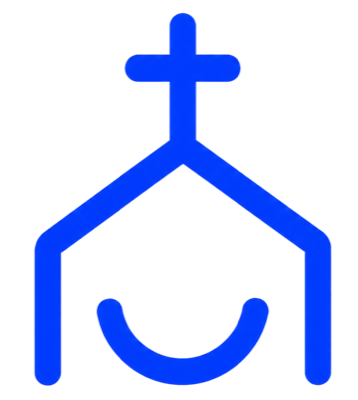

This agreement sets out what Make Church Eazy (“MCE”, “we”), operated by Tayoakosile Labs Ltd, and you (the “Ambassador”, “you”) will do together over the next six months. We have written it in plain language on purpose. Please read it fully before you sign.
Your posts do not have to be tutorials. Using the app and posting about it, showing it at church, sharing a graphic with your own caption, telling friends and family: all of these count. We want real, honest sharing.
This agreement is between Tayoakosile Labs Ltd (Company Registration No. 9723844, a private company limited by shares incorporated in the Federal Republic of Nigeria), which owns and operates Make Church Eazy (the church presentation, worship and live-stream software, the website at makechurcheazy.com and related services), and the Ambassador whose details are written in Schedule A. In this agreement “MCE” means Tayoakosile Labs Ltd and Make Church Eazy.
The purpose of the Make Church Eazy Ambassador Programme (the “Programme”) is to help more churches discover and use Make Church Eazy. You will do this by using the app, creating and posting content on your social media channels, sharing our graphics and announcements, and telling your friends, family and church community about it.
2.1 This agreement starts on the Start Date in Schedule A and runs for six (6) months. It then ends automatically unless both of us agree in writing to renew it. Email or a message from an official MCE address counts as writing.
2.2 Either of us may end this agreement early by giving 7 days’ written notice. We may end it immediately if the other side seriously breaks these terms (see clause 14).
You will post at least two (2) pieces of original content every week on your own social media channels (for example Instagram, Facebook, TikTok, YouTube, X, LinkedIn, WhatsApp Status, Telegram). Each post must clearly feature Make Church Eazy. Examples of what counts:
In every calendar month you will publish at least eight (8) qualifying posts. The monthly review in clause 4 is based on this number.
When MCE sends you a graphic, video, announcement or update (for example a new feature, a promotion or an event), you will share it on your statuses and stories (WhatsApp Status, Instagram and Facebook Stories) and, where it makes sense, on your feed and in your church, family and friends’ groups. Please share it within 48 hours of receiving it. These shares are in addition to the weekly posts in clause 3.1.
You will share Make Church Eazy with your friends, family, church leaders, media teams and other churches you know, using your personal referral link or code from Schedule A. Be helpful and respectful. Never spam people or add them to groups without their consent.
You will use Make Church Eazy for real, so that what you say about it is true. We also ask for honest feedback, bug reports and ideas for improvements. You will be invited to a short check-in each month.
Posts that count towards your commitments must stay publicly visible for at least 30 days (Stories and Status posts expire naturally, so keep the proof described in clause 4.2). Please do not delete or hide posts during the term.
4.1 Your activity is reviewed every month to check that you reached the minimum of eight (8) posts, the sharing in clause 3.3, and that your content follows clause 5.
4.2 By the 5th day of the following month you will send MCE the links to your posts and, for Stories and Status posts, screenshots that show the date. Send them in the way MCE tells you (for example an Ambassador form, email or WhatsApp). The Monthly Tracker in Schedule B is a handy way to keep count.
4.3 MCE will review what you send within 7 days and tell you the result: Goal met or Goal not met, with a short explanation and tips.
4.4 If a month is Goal not met, we will send a friendly written reminder and you will have 14 days to make up the missing posts. Life happens: if you tell us in advance about travel, illness, exams, a church programme or other good reasons, we will adjust your target for that month.
4.5 If you miss the monthly goal two months in a row (or three months in total) without an agreed reason, MCE may end this agreement and stop the benefits in Schedule A.
Everything you post about Make Church Eazy must follow these rules.
MCE may ask you to edit or remove a post that breaks these rules. You agree to do so promptly, usually within 48 hours.
Unless Schedule A says otherwise, the Programme is not a job and you will not receive a salary, fee or commission. Any benefit not written in Schedule A is not promised.
7.1 Referrals are tracked with your personal referral link or code. Any referral reward is set out in Schedule A and in MCE’s referral programme rules at the time.
7.2 Referring yourself, your own accounts, or accounts created only to claim rewards does not count. MCE may withhold or cancel a reward it reasonably believes was earned through misuse, and will explain why.
7.3 You are responsible for any tax that applies to benefits or payments you receive.
8.1 Our brand. MCE owns the Make Church Eazy name, logo, graphics, software and materials. We give you a limited, non-exclusive, non-transferable, revocable permission to use them only for the Programme and only as provided. Do not change, redraw, recolour or stretch the logo, and do not create accounts, pages, groups or domain names that look like MCE’s official ones.
8.2 Your accounts and your content. Your social accounts and the content you create belong to you.
8.3 Permission to reuse your content. You give MCE a free, non-exclusive, worldwide permission to repost, share, quote, edit lightly (for example crop or add captions) and display the content you create for the Programme, on MCE’s website, social media, emails and promotional material, including paid advertising. For content published during the term, this permission continues after the term ends, but MCE will stop using it in new campaigns if you ask in writing.
9.1 You agree that MCE may use your name, photo, social media handle, church name and short bio, as supplied in Schedule C, to create ambassador graphics, welcome posts, announcements, profile cards and website or social media features that present you as an MCE ambassador.
9.2 MCE will use your photo and details only to promote Make Church Eazy and the Programme. We will not edit your image in a misleading or embarrassing way and will not suggest that you endorse anything other than Make Church Eazy.
9.3 You may withdraw this permission at any time by written notice. MCE will stop using your image in new materials within 14 days and will remove it from our own channels where we can. We cannot recall materials that others have already downloaded or shared, or printed items already distributed.
9.4 You confirm that you own the photo you give us, or have permission to share it, and that you are at least 18 years old.
10.1 Some things you may learn as an ambassador are not public yet, such as unreleased features, plans, pricing, partnerships, test builds and information about MCE users. Keep these private until MCE says you may share them. This duty continues for 12 months after the term ends.
10.2 Do not collect, store or sell personal details of the people you refer on MCE’s behalf, and never ask anyone to share their MCE password or payment details with you. Signing up and paying always happens directly on MCE’s official website or app.
You are an independent volunteer ambassador. You are not an employee, agent, partner or legal representative of MCE. You may not sign contracts, accept money, give refunds or make promises on MCE’s behalf. This agreement is not exclusive: you may support other causes and products.
12.1 You are responsible for the content you post and for following clause 5. You will cover MCE’s reasonable losses if content you posted breaks someone else’s rights (for example by using copyrighted material without permission).
12.2 The Programme and MCE’s materials are provided as they are. To the fullest extent the law allows, MCE is not liable for indirect or consequential loss, lost income or lost followers arising from the Programme. Nothing in this agreement limits liability that cannot lawfully be limited.
MCE may update Programme guidelines (for example the graphics pack or reporting method) by written notice. Changes to your targets, benefits or to the term only apply if you agree to them in writing.
14.1 MCE may end this agreement immediately by written notice if you seriously break clauses 5, 8, 10 or 11, behave in a way that harms MCE’s reputation, or commit fraud (for example fake referrals).
14.2 When the agreement ends for any reason: you stop calling yourself an official MCE ambassador and remove that title from your bios; you stop using MCE’s logo and materials, except in posts that were already published and describe your past involvement truthfully; and MCE stops your benefits, except rewards already earned and confirmed under clause 7.
14.3 Clauses 7.3, 8, 9.3, 10, 12, 14.2 and 15 continue after the agreement ends.
If we disagree, we will first try to settle it in good faith by talking, within 14 days of either of us raising it in writing. This agreement is governed by the laws of the Federal Republic of Nigeria, and the courts of Nigeria will handle any dispute that cannot be settled.
By signing below, the Ambassador confirms that they have read and understood this agreement and its Schedules, are at least 18 years old, and agree to be bound by it. MCE confirms it agrees to the Programme terms.
Details in Schedule A
Tayoakosile Labs Ltd (RC 9723844)
Optional witness: Name Signature Date
| Ambassador full name | |
| Email address | |
| Phone / WhatsApp number | |
| Church or ministry | |
| City and country | |
| Social media handles (Instagram, Facebook, TikTok, YouTube, X, LinkedIn, other) | |
| Personal referral link or code | |
| Start Date | |
| End Date (6 months after the Start Date) | |
| Content commitment | At least 2 original posts per week and 8 qualifying posts per month, plus sharing MCE graphics and announcements on statuses and stories within 48 hours (clause 3). |
| Monthly review | Proof sent by the 5th of each month; result within 7 days (clause 4). |
| Benefits for the 6 months |
Ambassador plan, free for the 6-month term (Growth-level features). Referral rewards under MCE’s referral programme, when people you refer sign up or subscribe. Recognition: features on MCE’s channels and website, early access to updates, and an ambassador certificate. Other: |
Use this to keep count. Send your links and screenshots by the 5th of the next month. MCE completes the last two columns.
| Month | Posts this month (goal: 8) | Stories / Status shares | Links and screenshots sent | Review result | MCE initials |
|---|---|---|---|---|---|
| Month 1 | Yes | Met Not met | |||
| Month 2 | Yes | Met Not met | |||
| Month 3 | Yes | Met Not met | |||
| Month 4 | Yes | Met Not met | |||
| Month 5 | Yes | Met Not met | |||
| Month 6 | Yes | Met Not met |
We will use this to create your ambassador graphics and to introduce you to the Make Church Eazy community.
| Name to show on graphics | |
| Church and city | |
| Role (e.g. media team lead) | |
| Short bio (max. 2 lines) |
Photo tips: a clear, well-lit photo of you alone, face and shoulders visible, plain or tidy background, sharp (not blurry), taken with your phone camera at its highest quality. No filters, please.
I agree that Make Church Eazy may use my name, photo, handle, church name and bio as described in clause 9 of the Agreement.
Ambassador signature Date
A short, friendly guide to help you stay on track. It is not extra rules; it explains clauses 3 and 5.
| When | What happens |
|---|---|
| Every week | Post at least 2 times. Share MCE graphics on your status within 48 hours. |
| By the 5th | Send last month’s links and screenshots. |
| Within 7 days | MCE reviews and sends your result and tips. |
| If the goal is not met | You have 14 days to catch up. Talk to us early. |
Questions? Email support@makechurcheazy.com. Thank you for helping more churches discover Make Church Eazy.